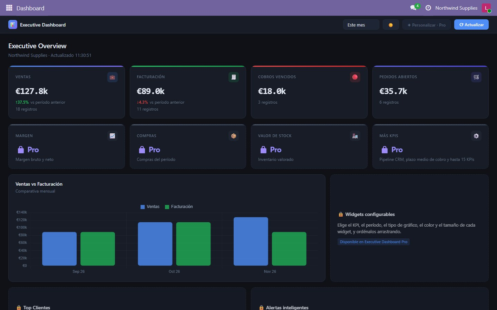
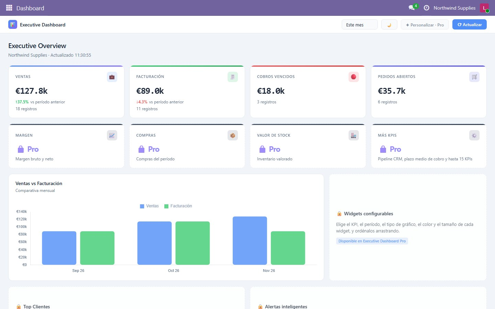

Executive Dashboard for Odoo Community
Four KPI cards and a monthly sales vs invoicing chart, read live from Odoo. No Enterprise license needed.

Open it from the Dashboard menu and see where sales and billing stand, without running a report.
Confirmed sales and posted customer invoices for the period, each with its change against the previous period.
The amount still unpaid after the due date and how many invoices it comes from.
Confirmed sales orders that are not fully invoiced yet.
A monthly bar chart that compares what you sold with what you billed.
Pick the period and every figure updates. Use the Refresh button to reload the data.
Switch between dark and light mode. The figures follow the company selected in Odoo.
The cards marked Pro show what Executive Dashboard Pro adds on top of this module.

Odoo 15, 16, 17, 18 or 19 Community.
Installs Sales and Invoicing if you do not have them.
Dashboard interface in Spanish.
15 KPIs including net margin, purchases and CRM. Widgets you configure one by one and reorder by dragging, top customers, alerts, and CSV and PDF export. €229 per Odoo version, one-time payment. It installs on top of this free module.
Questions or need help with the setup?
contacto@alvaromh.com | alvaromh.com
Developed by Álvaro Martínez